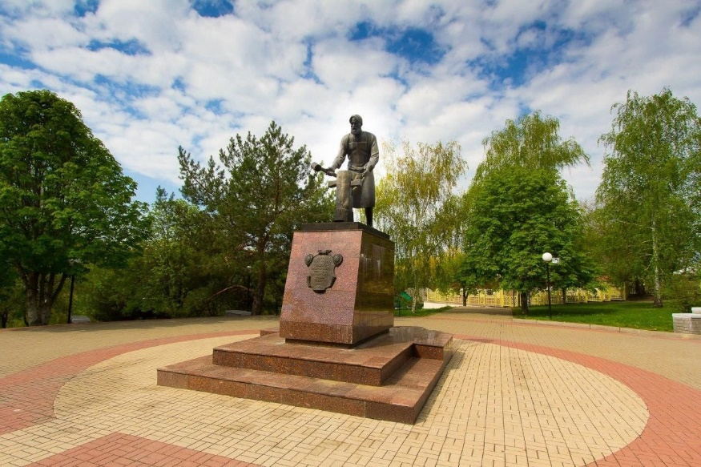

Пешком по Алексеевке
8 маршрутов · 4 до 45 минут
Первооткрыватель подсолнечного масла
Первая прогулка по центру · 45 минут · 1,5 км

Маршруты
Карта прогулок
Цветные линии показывают пешие пути между остановками по улицам и дорожкам. Выберите маршрут, чтобы увидеть его отдельно.
Алексеевка за 30 секунд
Четыре даты из истории Алексеевки на реке Тихая Сосна.
-
1685
Слобода на Тихой Сосне
Основана слобода Алексеевка — будущая богатая вотчина графов Шереметевых на южной границе государства.
-
1829
Родина подсолнечного масла
Крепостной крестьянин Даниил Бокарев впервые в России получил масло из семян подсолнечника, открыв новую отрасль.
-
1880–1913
Купеческий расцвет
В слободе выросли каменные особняки, купеческий клуб, ремесленное училище и храм Александра Невского.
-
1943
Освобождение города
19 января 1943 года Алексеевка была освобождена после полугодовой оккупации. Память героев хранят городские мемориалы.
Краеведческие викторины
Пройдите короткий тест после прогулки или испытайте себя в общей викторине из 10 случайных вопросов о городе.
Большая викторина по истории Алексеевки
Десять случайных вопросов из маршрутов. После каждого ответа вы увидите пояснение.
Кто подготовил маршруты
Паспорта восьми прогулок подготовили педагоги школы № 5 города Алексеевки. Для сайта редакция адаптировала вопросы школьных викторин, составила варианты ответов и пояснения.
В школьных паспортах указаны от двух до пяти сопровождающих. На странице каждой прогулки можно распечатать краткий план со стартом и адресами остановок. Условия входа во дворы школ № 3 и № 4 для самостоятельных посетителей предстоит уточнить.
Длина и время приведены по паспортам. У № 5 не указан автобусный участок, у № 8 уточняются время и границы расстояния. Метки на карте помогают найти ориентиры. Входы, переходы и проезд с коляской ещё предстоит проверить на месте.
Фотографии взяты из школьных паспортов. При увеличении открывается исходный кадр. Подписи к архивным снимкам сохраняют известные отметки коллекций. Более поздние фотографии показывают вид здания на момент съёмки.
Даты оккупации и освобождения Алексеевки сверены по справке областной библиотеки (PDF, с. 3). Адрес и метка бюста Рубана взяты из карточки памятника в копии государственного реестра.
- СОСТАВИТЕЛЬ ПАСПОРТОВ
- МБОУ «ООШ №5», г. Алексеевка, Белгородская область
- ОСНОВНОЙ СТАРТ
- Большинство прогулок начинается на ул. Гагарина, 14. Маршрут № 2 начинается у бюста Кириленко на пересечении Гагарина и Мостовой, № 7 — на ул. В. Собины, 10.
- ПРИКАЗЫ ШКОЛЫ
- Маршрут № 2 — от 15 декабря 2024 года № 265-орг. Маршруты № 1 и № 3–8 — от 15 октября 2024 года № 244-орг.